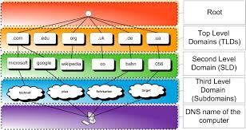

A Domain Name Server (DNS) is a system that translates human-readable domain names such as www.google.com into numeric IP addresses that computers use to identify and communicate with each other on the network.
When you type a website address into your browser, your computer contacts a DNS server and asks for the IP address associated with that domain name. The DNS server looks up the address in its records and returns the correct IP address. Your browser then uses that IP address to connect directly to the web server hosting the website. This entire process happens in milliseconds.
Without DNS, users would have to memorize long numeric IP addresses like 142.250.80.46 just to visit a website like Google. DNS acts as the phone book of the Internet, making it easy for people to access websites using simple, memorable names while computers handle the numeric addressing behind the scenes.